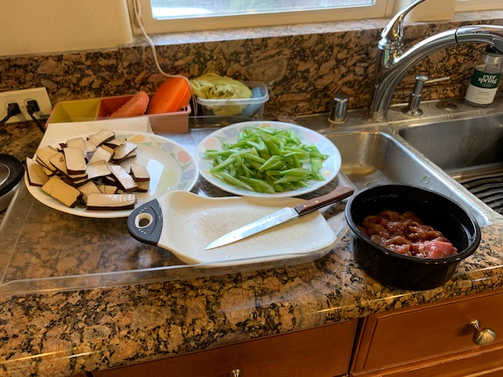
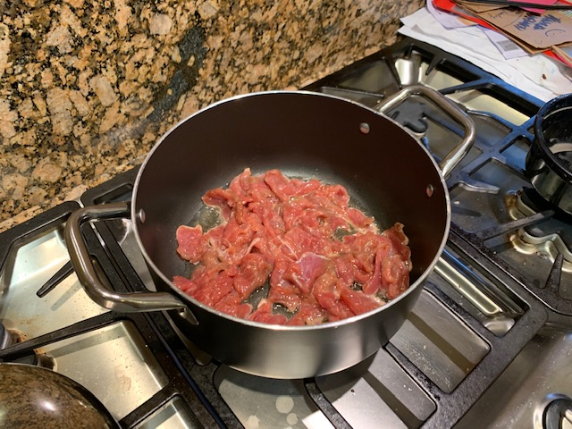
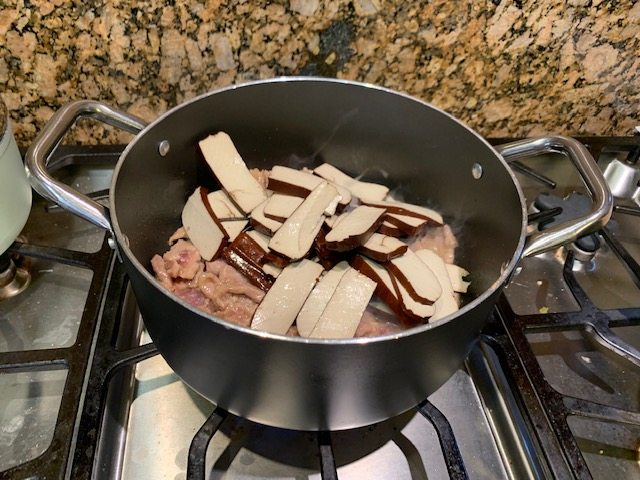
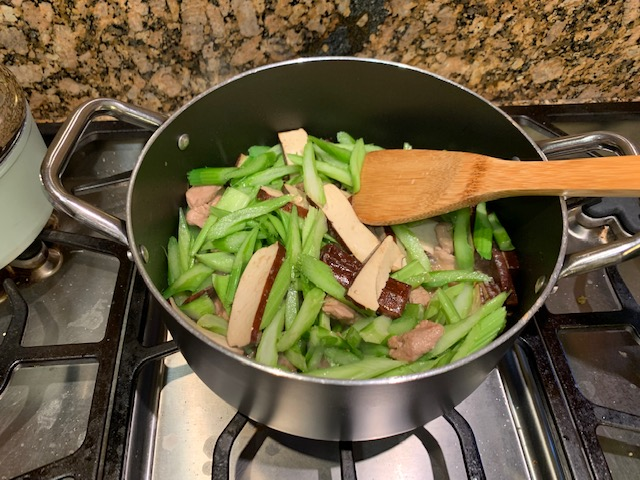
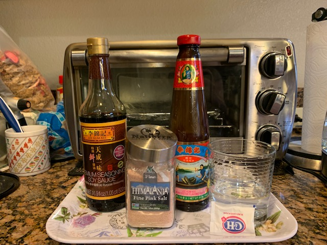
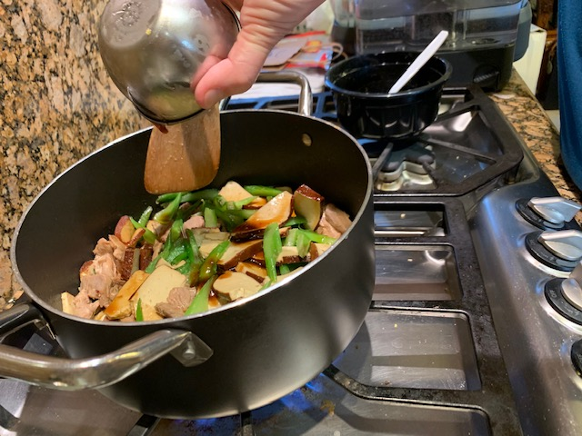
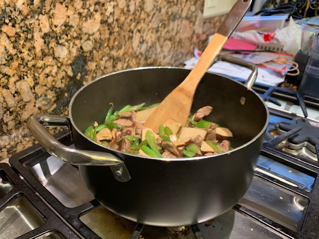
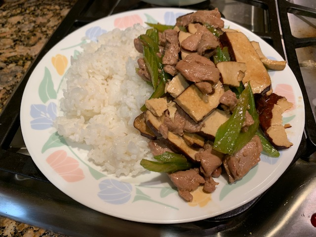

Stir-Fried Pork with Tofu & Celery

Step #1: Chop celery & tofu. Take marinated pork out of the refrigerator.
Step #2: Add marinated pork to the pan & saute on medium high heat.
Step #3: When pork is half done, add tofu. Stir-fry mixture for another 3 minutes
Step #4: Add celery to the cooked pork & tofu mixture & stir-fry everything for several minutes, or until moisture evaporates.
 Step #5: Mix soy & oyster sauce, salt, sugar, and water & add mixture to the pork, tofu, & celery mix.
Step #6: Saute entire mixture everything on high heat. Add salt at the end of cooking time, if needed.
Serve with steamed rice. Enjoy!